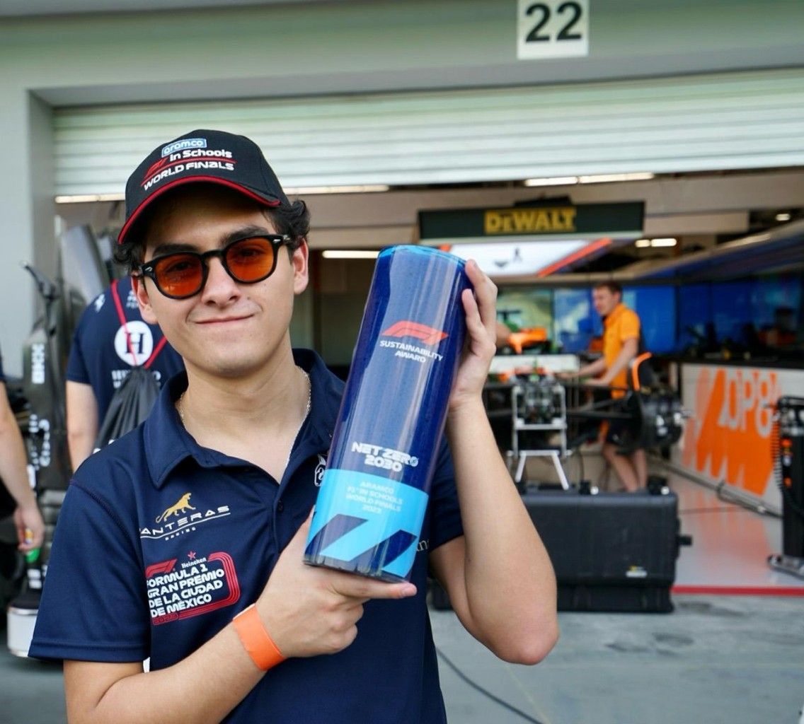
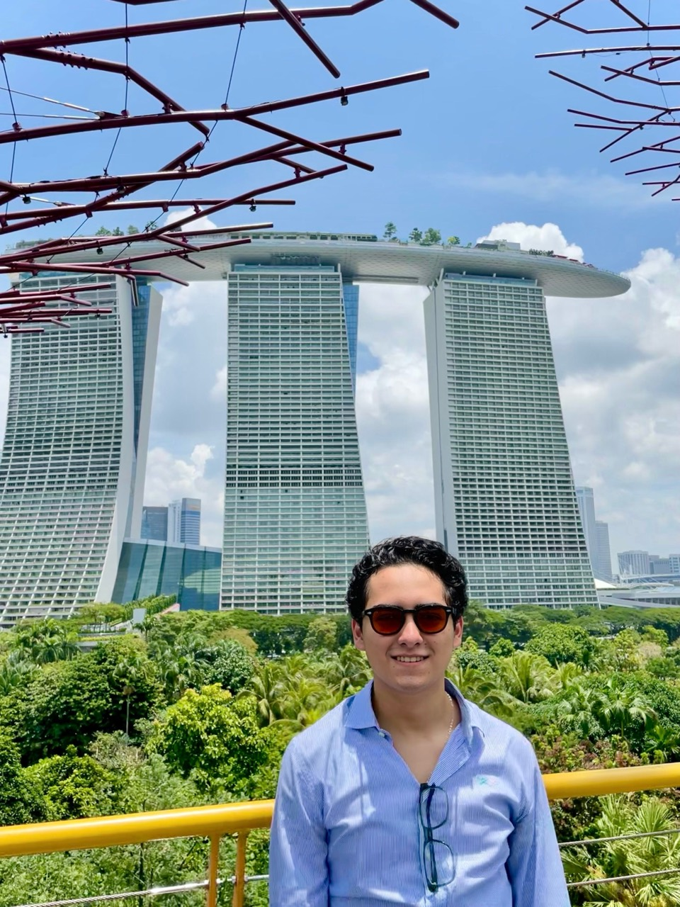
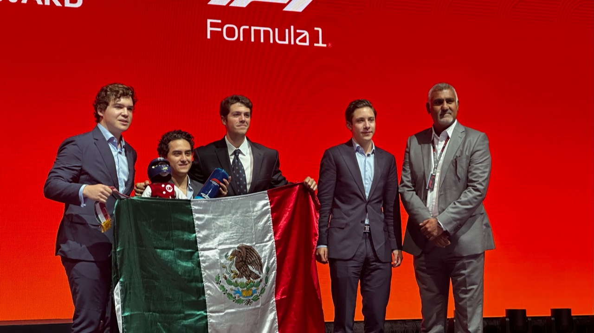
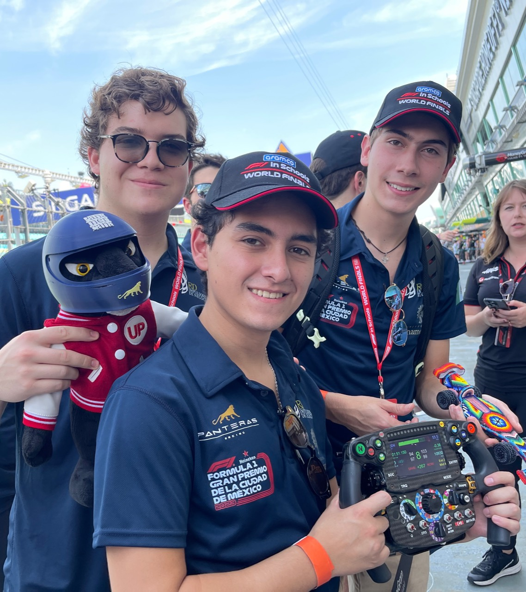
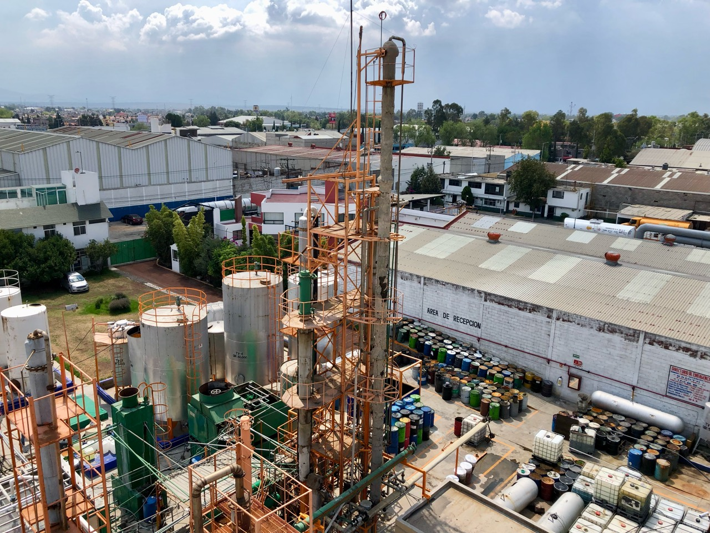
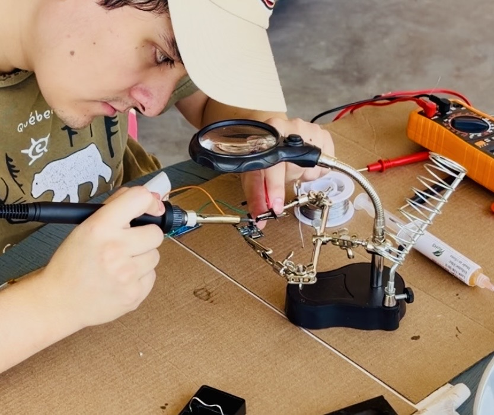
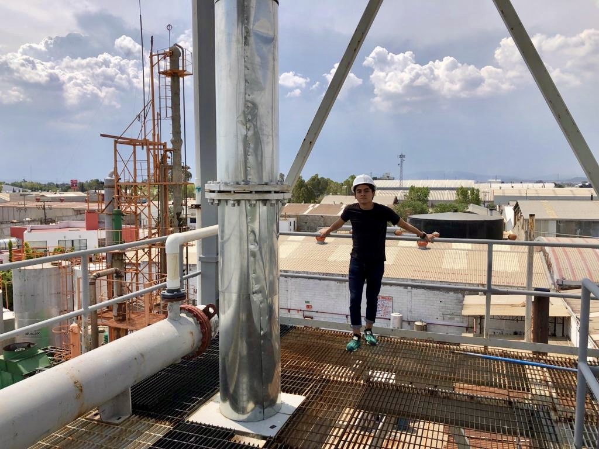
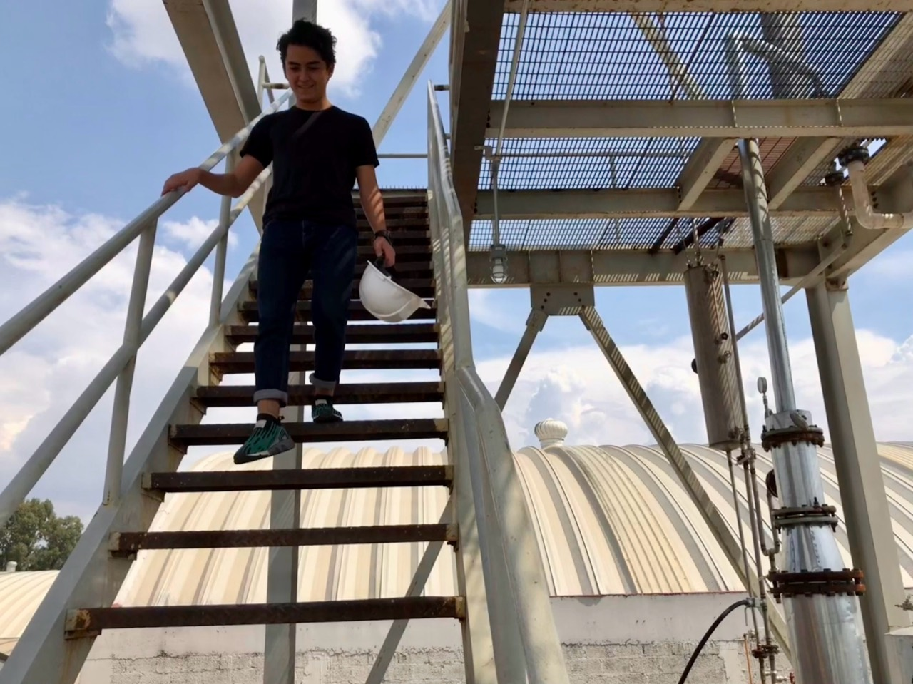

2022—2023
Panteras Racing
Founded Panteras Racing in PrepaUP; team leader, project manager, and sponsorship manager.
- Designed the Panteras Racing brand identity
- Initially called Leben Forcer
- More than MXN 1.5M in sponsorships
2022
Silverstone world finals
F1 in Schools World Finals.
2023—now
Universidad Panamericana
Applied Mathematics student · 7th semester
- Pure mathematics
- Applied mathematics
- Proof-focused program
- Expected graduation: December 2027
- GPA: 9.3 / 10
- English: C1
2023
Singapore world finals
F1 in Schools World Finals.
- F1 Sustainability Award
- Silver Helmet by the Mexican Automotive Federation
- Nominated: Best Sponsorship Strategy
- Nominated: Best Enterprise Portfolio




2023—2025
Holberton Anáhuac
Foundations of Computer Science, followed by a machine learning specialization.
- U-Net disaster detection
- Time series
- Neural style transfer
2025
ICPC national final
Participated with Nexus Lab UP.
- National final
- Competitive programming
2025—2026
Nand2Tetris
Virtual computer implemented from first principles.
- Logic gates and CPU
- Compiler and operating system
- Low-level Tetris game
2026
Digital twin
AI-powered telemetry system for a chemical plant.
- Chemical distillation prediction
- Industrial optimization
- Implementation in progress




2026—now
Polymath Jr.
Generative modeling via drifting and priming models.
- Generative modeling
- Generative AI inference
- Sampling
- Research
- Mentor: Giulio Triglia - CUNY
- Mentor: Ricardo Baptista - University of Toronto
2026—now
ARISE
Advanced Robotics Intelligence Systems and Engineering. A Unitree Go2-based rescue robot for exploring hazardous environments.
- ROS 2 programming
- Robot autonomy
- Research
- Mapping and autonomous navigation
- Environment and victim perception
- Custom arm for buttons, valves, and objects
Unitree Go2